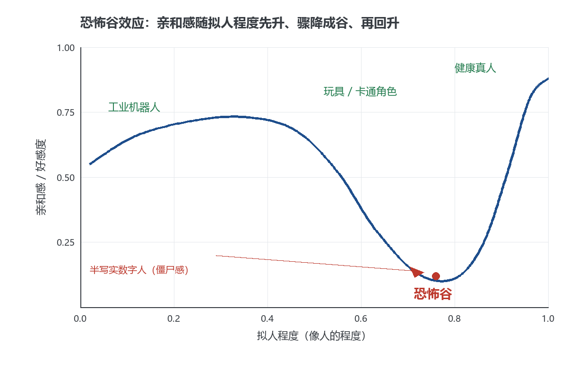

Course / Article
- 章节
- 3,666 字
- 2026.11.15
- 14 个小节
第一部分 考试概况与复习方法
下载 PDF离线 / 打印版
0.1 考试基本信息（务必先看）
| 项目 | 内容 |
|---|---|
| 课程 | 计算机动画（浙江大学，金小刚） |
| 时间 | 2026年11月15日（周日）10:30—12:30 |
| 地点 | 玉泉校区 教4-310 |
| 题型一 | 判断题 15 题，每题 2 分，共 30 分 |
| 题型二 | 问答题 7 题，每题 10 分，共 70 分 |
命题特点（据题型推断，供复习定位）：判断题考"定义边界与常见误解"，往往只在个别字眼上设陷阱；问答题考"是什么 + 为什么 + 怎么做"，7 题基本按大纲的七大板块各出一题（动画原理与原则、朝向与四元数、二维/图像 morphing、三维 morphing 与群组、关节动画 IK、运动捕获与变形、碰撞检测/布料/隐式曲面等）。因此每一板块都必须能写出 300~500 字的结构化答案。
0.2 本资料的用法
- 第一轮（2~3 天）：按第一至第十三部分顺序通读，把每节的"考点"栏当作必背点；
- 第二轮（1 天）：只看第十五部分"判断易错点"与第十六部分"问答题预测"，自查能否不看书答出；
- 考前 2 小时：只看附录 A 公式速查（四元数、Slerp、内在形状插值、Velocity Verlet、Wyvill、FFD、Green 坐标、射线求交）；
- 附录 C 是"大纲逐条—章节"对照表，可用来确认没有遗漏任何知识点。
0.3 知识地图
计算机动画 = 让几何/图像/物理量随时间变化。全部考点可归为四条主线：
- 表现线：视觉原理 → 12 条动画原则 → 表演与节奏（第一、二部分）
- 几何线：朝向表示（矩阵/欧拉角/四元数/Slerp）→ 形状渐变 morphing → 变形 deformation（第三、四、五、十部分）
- 仿真线：粒子、群组、布料、隐式曲面、碰撞检测（第六、七、十一、十二、十三部分）
- 角色线：FK/IK → 运动捕获、绑定蒙皮、运动重定向、运动图、表情（第八、九部分）
第二部分 动画的基本知识与视觉原理
1.1 人的五感
人的五种感觉：视觉、听觉、触觉、味觉、嗅觉。
| 感觉 | 在动画/影视中的作用 | 现状 |
|---|---|---|
| 视觉 | 最主要的通道，承载画面构图、运动、色彩、光影、材质等信息（人获取外界信息约 80% 来自视觉） | 完全实现 |
| 听觉 | 配音、音效、音乐，与画面共同构成节奏与情绪；声音可"补足"画面未表现的内容 | 完全实现 |
| 触觉 | 力反馈、震动、4D 影院的座椅/风/水雾；VR 手柄、数据手套 | 部分实现，与动画本体关系弱 |
| 味觉 | 4D/嗅觉电影中的气味、味道装置 | 极少，实验性 |
| 嗅觉 | 同上 | 极少，实验性 |
考点：五感是什么；动画主要依赖视觉与听觉；多感官（4D、VR、力反馈）是"临场感/沉浸感"的增强手段，而非动画成立的必需条件。
1.2 动画的基本知识
动画（Animation）：通过连续播放一系列静止画面（帧），利用人眼的视觉生理特性（视觉暂留、似动现象），使原本静止的形象产生运动感觉的技术与艺术。词源拉丁语 anima（灵魂），即"使……有生命"。
核心术语：
| 术语 | 含义 |
|---|---|
| 帧（frame） | 一幅静止画面 |
| 帧率（frame rate, fps） | 每秒播放的帧数。电影 24，PAL 电视 25，NTSC 电视 30，游戏 60/120/144 |
| 关键帧（key frame） | 决定动作关键姿态/极值的帧，由动画师给定 |
| 中间帧（inbetween） | 两个关键帧之间插值生成的帧，传统动画由"中间画"助手绘制，计算机动画由插值算法自动生成 |
| 时间轴（timeline） | 关键帧在时间上的分布，决定节奏（timing） |
| 时间曲线 / 动画曲线（F-curve） | 参数随时间的函数，其切线决定快慢变化 |
| 运动模糊（motion blur） | 快门开启期间物体的模糊拖影；24fps 电影靠它保持流畅感 |
传统动画的制作流程：文学剧本 → 分镜头脚本（storyboard）→ 角色/场景设计 → 原画（设计稿）与关键帧 → 中间画 → 描线上色 → 摄影（逐格拍摄）/合成 → 剪辑与配音。
动画的分类：
- 按制作方式：二维手绘动画、剪纸/皮影、定格动画（stop motion，黏土/木偶）、三维计算机动画、实拍+CG 合成。
- 计算机动画按驱动方式：
- 关键帧动画（keyframing）：人给关键姿态，机器插值；
- 过程/算法动画（procedural）：用规则/程序生成，如 L 系统、分形、粒子系统；
- 基于物理的动画（physically based）：用动力学方程与数值积分，如布料、刚体、流体；
- 运动捕获动画（motion capture）：真人表演驱动；
- 行为动画（behavioral）：给智能体行为规则，群组/鸟群；
- 数据驱动/AI 动画：从数据中学习（如 StyleGAN、深度学习姿态估计）。
计算机动画相对传统动画的优势：中间帧自动生成、修改成本低、可反复迭代、真实感（光照/材质/物理）、可生成传统手段无法完成的特效（粒子、群组、流体）、可与其他数字资产复用、可输出多种分辨率与格式。
考点：动画的定义（不是"画很多张图"，而是"利用视觉特性产生运动感"）；帧率常识；关键帧/中间帧；计算机动画的分类。
1.3 动画形成的视觉原理（重点）
动画之所以"动"，依靠两个人眼/人脑机制：
1.3.1 视觉暂留（persistence of vision）
视网膜上的光化学感受在光刺激消失后仍会保留约 1/10~1/24 秒（常用 0.1 s）的影像残留。因此当画面以足够高的频率（>约 16 帧/秒）更换时，人眼不会感到一幅幅断续的画面，而是看到连续的画面。
- 作用：消除"闪烁感"，使逐帧画面在知觉上融合；
- 局限：视觉暂留只解释"画面为什么不闪"，不能完整解释"为什么看到运动"——这一点常作为判断题的陷阱。
1.3.2 似动现象 / Phi 现象（apparent motion, φ phenomenon）
Wertheimer（1912）发现：两个静止的光点按合适的时间间隔（约 50~60 ms）交替出现时，观察者会"看到"一个光点在两点之间移动。这种由离散刺激产生连续运动知觉的现象称为似动现象，其中最短时距下的运动知觉称为 Phi 现象（还有 Beta 运动、自动运动等）。
- 现代解释：运动是由大脑视觉系统的运动通道（MT/V5 区）对"位置变化 + 时间间隔"进行计算的结果，属于"自下而上的运动能量"与"自上而下的运动预期"共同作用；
- 对动画的启示：帧与帧之间的位移量必须落在"可被知觉为同一物体连续运动"的范围内——位移太大即被看成两个不同物体（跳变），位移太小则被看成静止或抖动。
1.3.3 闪烁与临界闪烁频率
- 临界闪烁频率（CFF）：人眼开始感到连续照明而非闪烁的频率，约 50~60 Hz（随亮度、视角、年龄变化）。
- 因此 24 fps 的电影如果不做处理会闪烁，实际放映机用双片/三片快门把每帧投 2~3 次，使闪烁频率提高到 48~72 Hz。
- 电影选 24 fps 是"艺术与经济"的折中：足够的流畅感 + 运动模糊带来的"电影感" + 胶片成本；游戏/交互应用需要 60 fps 以上以降低输入延迟；VR 需要 90 fps 以上以防眩晕。
考点：①动画的视觉原理 = 视觉暂留 + 似动（Phi）现象，不能只答视觉暂留；②视觉暂留时间约 0.1 s；③电影 24 fps 靠快门重复放映避免闪烁；④帧率与流畅度、运动模糊的关系。
1.4 计算机动画在影视特技中的作用
可以从"能做什么"和"带来什么价值"两层回答：
能做什么（功能）：
- 数字角色与生物：写实/卡通的角色、动物、怪物（如《指环王》Gollum、《阿凡达》Na'vi），包含建模、绑定、肌肉/皮肤、毛发、表情；
- 虚拟场景与环境延伸：数字接景、人群/城市扩展、天气与大气效果；
- 粒子与群组特效：爆炸、火焰、烟、水、雨雪、沙尘、碎片、千军万马；
- 动作捕捉与表演驱动：用演员表演驱动数字角色，保留细腻表演；
- 数字替身与"返老还童"：危险镜头替身、演员年龄变换、已故演员重现；
- 虚实合成：摄像机跟踪/匹配移动（matchmove）、光照匹配、绿幕抠像、CG 与实拍的融合；
- 修复与增强：去钢丝、擦除、加光效、调色；
- 预演（previs）与虚拟拍摄：在拍摄前用低精度动画确定镜头、调度、视效方案；
- 创造"不可能"的镜头：长镜头穿越、微观/宏观尺度、非现实物理。
带来的价值：
- 可控性：光照、天气、表演、镜头都可反复调整，不依赖拍摄现场条件；
- 可重复与可迭代：改一版比重拍便宜得多；
- 安全与成本：替代危险实拍、减少搭景与群演；
- 表现力：能表现现实中拍不到、拍不起、拍不出来的内容，扩展了电影的叙事语言；
- 分层制作：模型、动画、特效、合成分层，便于工业化协作。
考点：问答题若问"计算机动画在影视特技中起什么作用"，按"功能 4~6 条 + 价值 3~4 条"作答，并各举一例（Gollum、粒子爆炸、群组人群、matchmove）。
1.5 Blender 软件的特殊性（开源）
Blender 是开源（open source）的三维创作软件，以 GNU GPL 许可发布，其特殊性主要体现在：
| 维度 | 说明 |
|---|---|
| 授权与成本 | 自由软件，免费，可自由使用、复制、修改、再分发，允许商业项目使用；源码开放，可自行编译、定制、集成到自有管线 |
| 功能覆盖 | "全流程一站式"：建模、雕刻、UV、材质节点、绑定、动画、物理（刚体/柔体/布料/流体/烟雾）、粒子、毛发、渲染（Cycles 路径追踪 / EEVEE 实时）、合成、视频剪辑、2D 动画（Grease Pencil）、几何节点（Geometry Nodes）、摄像机跟踪 |
| 可扩展性 | Python API（bpy）几乎可脚本化一切，插件生态丰富，可写自定义算子/节点/渲染引擎 |
| 平台 | Windows / macOS / Linux 跨平台，安装体积小，可在普通 PC 上运行 |
| 社区与迭代 | 社区驱动，版本迭代快（约每年一个大版本），文档与教程丰富，教育场景友好 |
| 相对不足 | 大型工业管线中的资产/权限/版本管理、与 Maya/Houdini 等商业软件的生态衔接、官方商业支持与培训体系相对弱；部分高端角色/毛发/大场景工具链不如商业软件成熟 |
考点：Blender 最本质的特殊性是开源、免费、GPL、可定制、全流程（判断题常把"开源"与"免费/可商用/可修改源码"连在一起考；注意 GPL 并不禁止商业使用）。
1.6 计算机动画中的运动包括哪些参数
"运动"在计算机动画中由一组随时间变化的参数描述，可分为：
（1）几何/运动学参数
| 参数 | 含义 | 说明 |
|---|---|---|
| 位置（平移） | 物体参考点在世界/父坐标系中的坐标 (x, y, z) | 3 个自由度 |
| 朝向（旋转） | 物体姿态，可用旋转矩阵、欧拉角、轴线角、四元数表示 | 3 个自由度 |
| 缩放（尺寸） | 沿各轴的缩放因子 | 3 个自由度，可做挤压拉伸 |
| 形变（变形） | 顶点/控制点的相对位移、FFD 控制点、蒙皮权重驱动的形状变化 | 高维参数 |
物体一般有 9 个参数（平移 3 + 旋转 3 + 缩放 3）；刚体有 6 个自由度（DOF）；铰链关节 1 个 DOF，球关节 3 个 DOF。
（2）时间/微分参数
- 速度 v、加速度 a、角速度 ω、角加速度 α；
- 时间（帧号、时刻）、持续时间、相位/偏移；
- 这些量决定"timing"，即动作的快慢、重量感与节奏。
（3）动画系统中的参数
- 关节角度（关节动画）、蒙皮权重、Blend Shape 权重（表情）、粒子与场参数、材质/光照参数；
- 动画曲线（F-curve）的切线（tangent）与插值方式（线性、贝塞尔、样条、阶跃）也是运动表现的关键参数。
考点：常考"运动包括哪些参数"——标准答法是位置、速度、加速度、朝向（旋转）、缩放、形变，并补充"刚体 6 自由度、物体 9 参数"。若问的是关节动画，则答"关节角度 + 根节点位置/朝向"。
1.7 动画中的"恐怖谷效应"（Uncanny Valley）
提出：日本机器人学家森政弘（Masahiro Mori）1970 年提出。
内容：以"拟人程度"为横轴、"亲和感/好感度"为纵轴，曲线在机器人/人偶接近人类但尚未完全逼真时急剧下降，形成一个深谷，即"恐怖谷"；当拟人度继续提高到与真人几乎无法区分时，好感度又回升到接近真人的水平。

为什么会产生：
- 进化上，人脑对"像人但不是人"的刺激高度敏感（疾病、尸体、危险信号），产生排斥；
- 知觉上，细微的不一致（眼神无焦点、皮肤无次表面散射、面部肌肉不联动、运动节奏像机械、牙齿/眼睛材质错误）被放大为"不对劲"；
- 认知上，观众对写实角色期待"和真人一样"，任何瑕疵都被注意；而卡通角色因期待值低，容错度高。
在三维计算机动画中的表现与应对：
- 写实数字人最容易掉进谷底：眼睛（眼神光、巩膜、湿润感）、皮肤（SSS、毛孔、油脂）、毛发、微表情、口型同步、运动（重量感、眼球转动）；
- 应对策略：①风格化/卡通化（故意离开写实区间，如皮克斯式大眼）；②提高技术保真度（PBR、SSS、毛发、面部捕捉、微表情）；③避免"半写实"——要么明显风格化，要么足够逼真；④用运动与表演的"生命力"弥补细节；⑤在电影中通过镜头、景深、光照掩盖瑕疵。
考点：定义 + 曲线形状（先升、骤降成谷、再回升）+ 为什么（进化/知觉/预期）+ 应对（风格化或提高保真度）。